SHAPING BANGLADESH SINCE 1970
Broad Vision.
Honest Service.
Great Value.
Over five decades of trusted architectural and engineering consultancy, building a stronger future with expertise and integrity.
SHAHEEDULLAH & ASSOCIATES LTD.SCROLL TO EXPLORE ↓
1970Established
50+Years of Experience
16Featured Projects
6Core Services
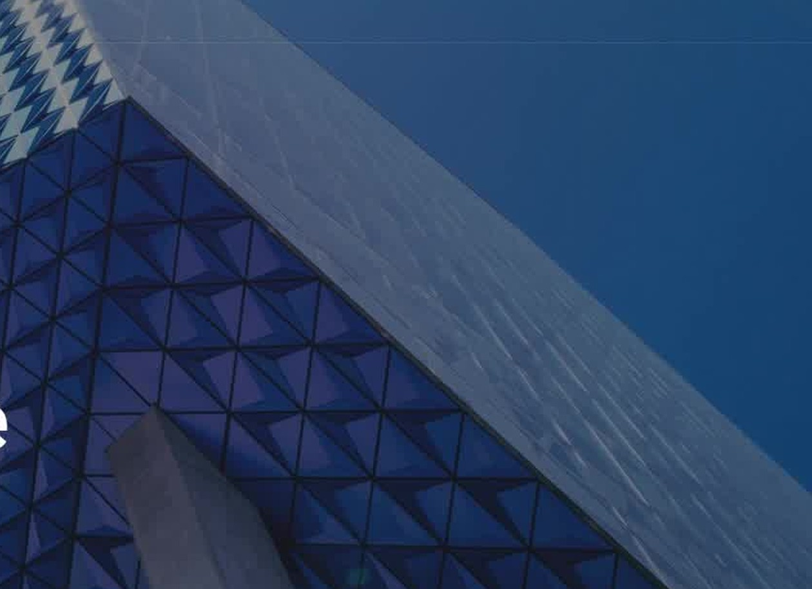
Since
1970Built on trust
1970Built on trust
WHO WE ARE
Decades of experience.
One commitment to excellence.
Shaheedullah & Associates Ltd. (SAL) is an established architectural and engineering consulting firm headquartered in Dhaka, Bangladesh.
Since 1970, SAL has developed a legacy of consultancy services across the building sector. Our multidisciplinary team brings together architects, planners, civil and structural engineers, mechanical and electrical experts, and associated specialists.
The firm is headed by Engr. Dulal Kumar Das, Managing Director, supported by directors and project-group leaders.
✓ Multidisciplinary Expertise✓ Quality-Focused Delivery✓ Over Five Decades of Service
Meet our leadership ↗ OUR EXPERTISE
Our Specialization
Integrated architectural and engineering capabilities supporting complex building and infrastructure projects.
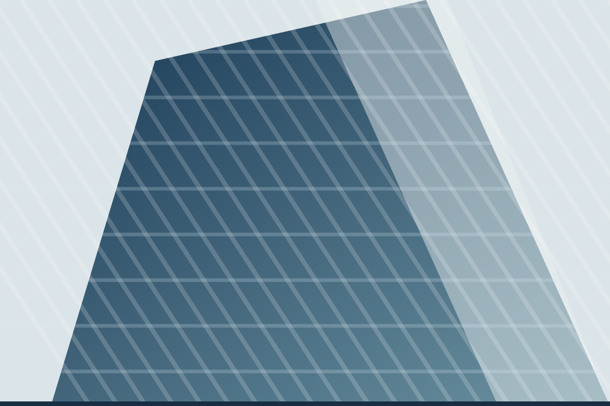
Areas of specialization
- ✓Architectural Design
- ✓Structural Design
- ✓Electrical Design
- ✓Plumbing Design
- ✓Environment & Socio-Economy
- ✓Mechanical Design
- ✓Project Management
- ✓Construction Supervision
- ✓Feasibility Studies
- ✓Urban & Regional Planning
- ✓Quantity Surveying & Cost Estimation
- ✓Geotechnical & Foundation Engineering
WHAT WE DO
Our Services
Comprehensive consultancy services, from planning and design through multidisciplinary engineering support.
Structural Design and Drawing
Electrical Design and Drawing
Plumbing Design and Drawing
Environment & Socio-Economy
Mechanical Design and Drawing
OUR PORTFOLIO
Featured Projects
Explore selected ongoing and recently completed assignments.
 Ongoing
OngoingMaster Plan and Residential Complex of Payera Port Authority at Kalapara, Patuakhali
View project OngoingRepresentative image
OngoingRepresentative imageConstruction of Community Centers at different places of Dhaka South City Corporation
View project Ongoing
OngoingCentral Packaging Buildings at Shyampur under Department of Agricultural Extension (DAE),
View project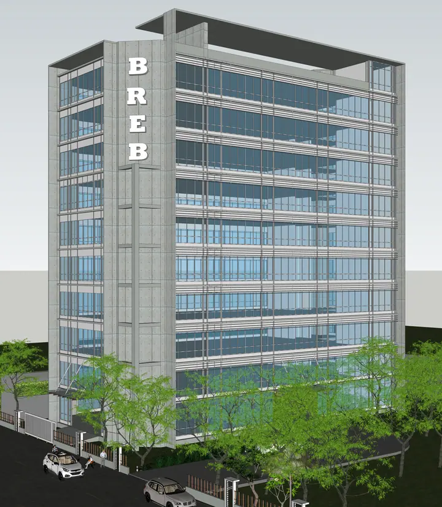
OngoingExecutive Office Building of BREB Head Quarter at Khilkhet, Dhaka
View project OngoingRepresentative image
OngoingRepresentative imageFarm Mechanization under Department of Agricultural Extension (DAE)
View projectOngoingRepresentative imageConstruction of new 196 Nos. 500 M.T. & 1000 M.T. Capacity Food Godown with ancillary facilities in different strategic locations across the country Under Directorate General of Food.
View project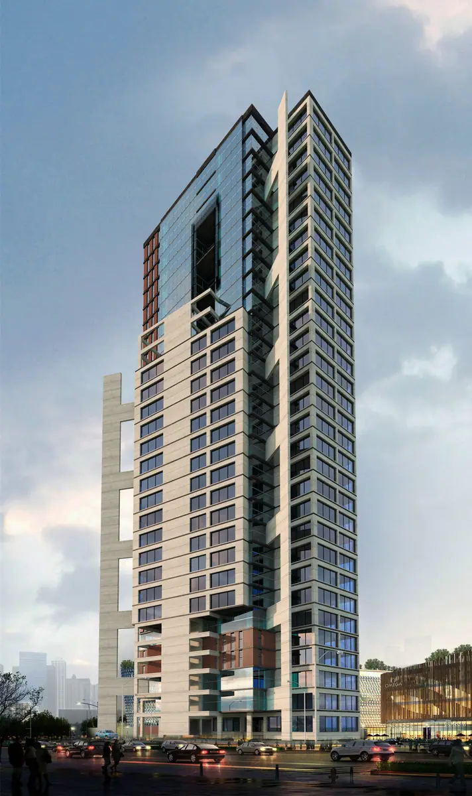
OngoingRupali Bank Head office at Motijheel, Dhaka
View project OngoingRepresentative image
OngoingRepresentative imageFeasibility Study on construction/reconstruction/vertical or horizontal expansion of Maternal Child Welfare Centers (MCWC) of existing 64 District level
View project Completed
CompletedEstablishment of Medical College, Medical College Hospital and Nursing College at Gopalganj
View project Completed
CompletedEstablishment of Satkhira Medical College & Hospital at Satkhira
View project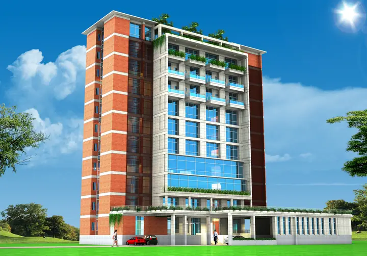
CompletedRepresentative imageMultistoried Commercial Building of Chattogram Development Authority at Saltgola, Chattogram
View project CompletedRepresentative image
CompletedRepresentative imageMultistoried Academic Building, Rest House and Open Air Theatre Stage for Chattogram University of Engineering and Technology (CUET)
View project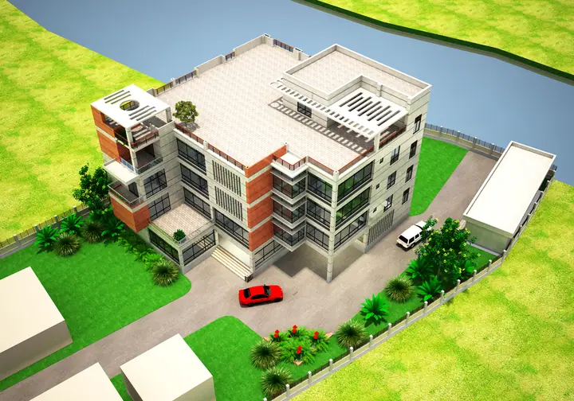
CompletedAD & DD Office at different places of Bangladesh Department of Agricultural Extension (DAE)
View project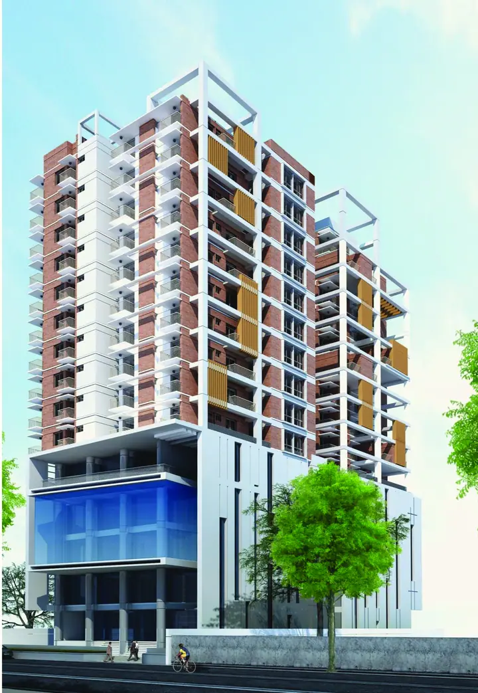
CompletedOffice cum Residential Building of Dhaka North City Corporation at Sector 2, Mirpur, Dhaka
View project Completed
CompletedAI Laboratory, Savar, Dhaka under DLS
View project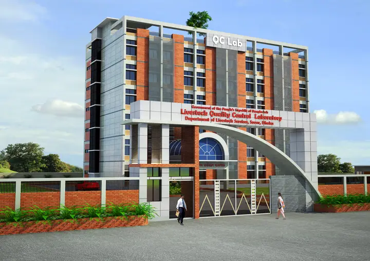
CompletedQ.C. Laboratory, Savar, Dhaka under DLS.
View projectProject photographs are selected from SAL’s supplied gallery. Cards labeled “Representative image” show a related gallery photo, not a verified photograph of that exact project.
Illustrative architectural graphics are used where original project photography was not supplied.
Explore our architectural project photographs
Open Projects Gallery ↗Browse the project image gallery featuring photographs and 3D visualizations supplied by SAL.
OUR PEOPLE
Our Leadership
A team of experienced professionals guiding SAL's work.
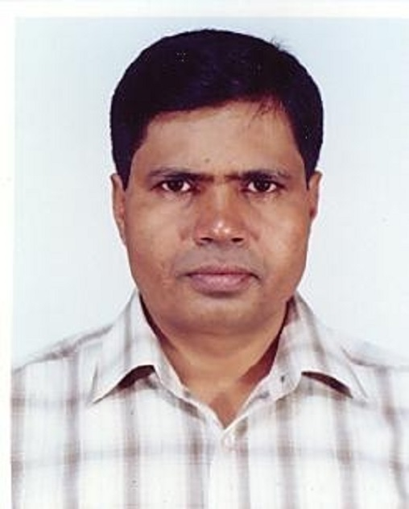
Engr. Dulal Kumar Das
Managing Director
49 years of experience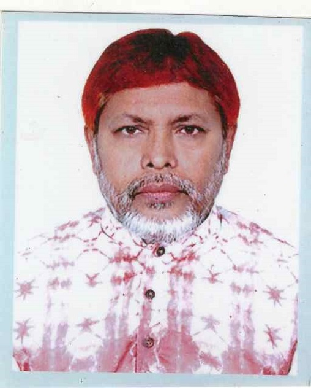
Ar. Fahim Sobhan
Director
30 years of experience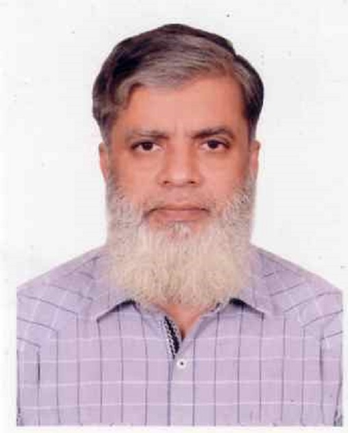
Engr. Mostafizur Rahman
Director
38 years of experience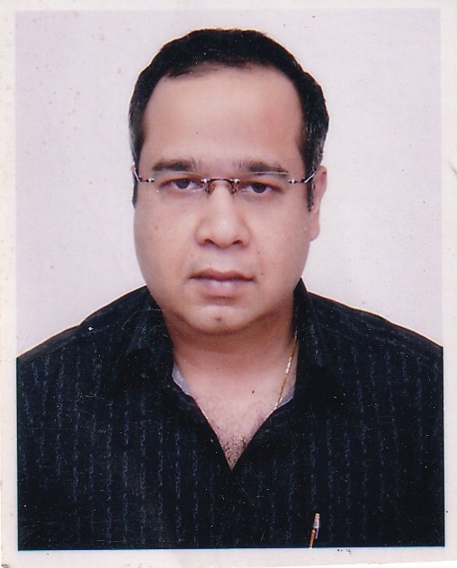
Engr. AKM Kamaruzzaman
Director
32 years of experience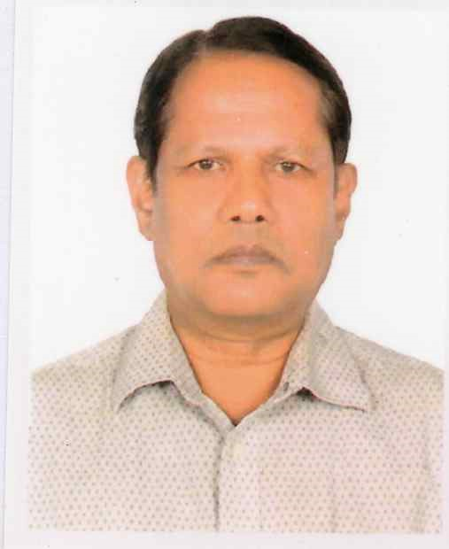
Engr. Md. Monir Uddin
Leadership Team
45 years of experience| Name & Qualification | Designation | Experience |
|---|---|---|
| Engr. Dulal Kumar Das, B.Sc. Engg. | Managing Director | 49 years |
| Ar. Fahim Sobhan, B.Arch | Director | 30 Years |
| Engr. Mostafizur Rahman, B.Sc, Engg. | Director | 38 Years |
| Engr. AKM Kamaruzzaman B.Sc, Engg. | Director | 32 Years |
| Engr.Md. Monir Uddin | Director | 45 Years |
View staff composition ＋
| Qualification / Discipline | Personnel |
|---|---|
| Team Leader | 04 |
| Architect & Planner | 06 |
| Structural Engineer | 04 |
| Civil Engineer | 08 |
| Electro-Mechanical Engineer | 04 |
| Procurement Specialist | 02 |
| Water and Water Management Specialist | 02 |
| Water Supply Engineer | 03 |
| Environment Specialist | 02 |
| Sociologist | 02 |
| Diploma Engineer | 24 |
| Surveyor | 04 |
| CAD Operator | 08 |
| Administrative and Accounts Office Staff: (Administrative Officer, Accounts Officer, Company Secretary, Messenger, Peon etc.) | 16 |
LET'S WORK TOGETHER
Building tomorrow,
together.
Discuss your next architectural or engineering consultancy project with our team.
CONTACT SAL
Get In Touch
For enquiries, project discussions and consultancy information.
Contact information
Working Hours
Sunday – Thursday
9:00 AM – 5:00 PM
Send us a message
Fill out the form to prepare an email to our office.